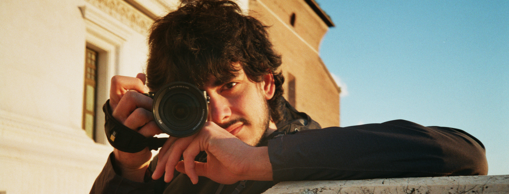

ABOUT
I always think that
my first approach with
communication was with my first
Nikon Coolpix. Since that moment
I have never stopped recording and
showing what I was doing. Maybe
this background
pushed me to continue my studies in
Communication Design, where
I discovered and expanded my knowledge.
The projects I have
worked on allowed me to
improve soft skills, such as
teamwork.
My preferred language
is reportage. For
this reason I was been e-reporter for
Fuorisalone.it for two
consecutive years.
I worked as a videomaker
in some project, putting into practice
different techniques, from video shooting
to motion graphics.
I’m interested in coding,
from web design to development of
video games.